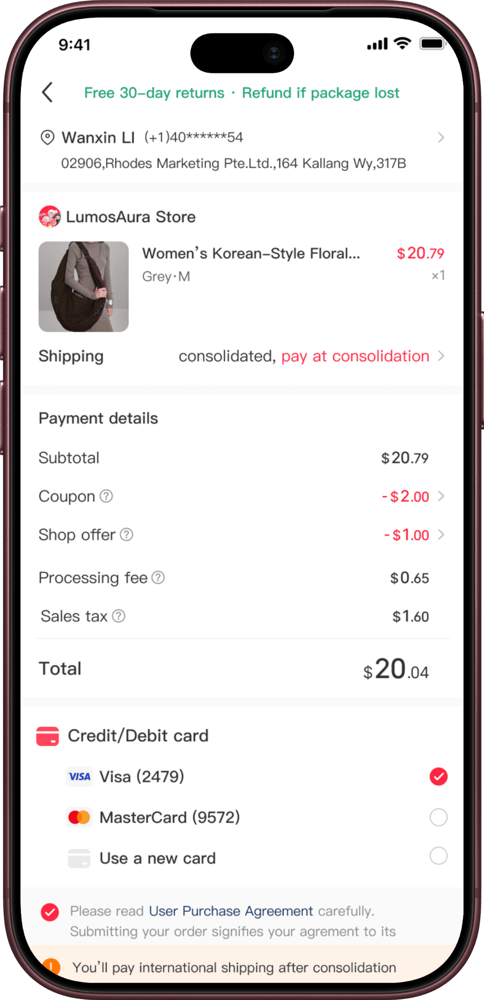

这个商品，
能送到我这里吗？
先了解配送和服务，再决定是否购买。


FROM UNCERTAINTY在点击购买之前，
先回答用户真正关心的事。
这份案例围绕面向海外消费者的跨境交易体验，整理商品介绍、结算费用和购买后保障三个触点，呈现信息如何变得更易理解。
参考 Shaelyn 的 Rednote 跨境购物案例（页面标注 2026 年 5 月起）。原设计与截图归原作者所有，本页为中文内容及网页展示整理。
先了解配送和服务，再决定是否购买。
费用与优惠，要能看清，也能算明白。
下单之后，也要有明确的预期。
让 redshop 的配送与保障更容易被理解。
将服务介绍、命名和图标表达放在一起审视，让用户更快找到购买所需的信息。
服务信息层级 · 配送说明 · 图标与文案表达
在下单之前，把费用说明白。
重新组织费用与优惠的呈现，让结算信息更简洁，同时保留用户作决定时需要的细节。
费用明细 · 优惠展示 · 总价层级
把等待与售后的预期交代清楚。
通过订单状态与保障说明，帮助用户了解配送进展，以及出现问题后可获得哪些支持。
订单进度、支付信息与售后规则，共同构成购买后的信任感。
从支付、配送与售后语境理解用户，避免只翻译界面文字。
商品页的承诺、结算页的信息与订单中的保障，需要前后一致。
看见需求背后的顾虑，再决定信息应放在哪里、如何表达。
本页为参考案例的网页化整理，未将原作者经历或业绩表述为本人的经历；未使用原站未明确呈现的转化率等数值。素材完整展示及更多项目过程请查看原作者页面。